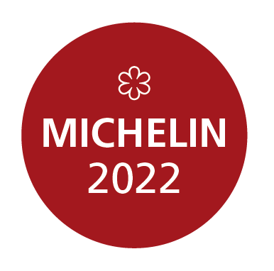

About Us
Gusteau's is a French style restaurant founded and established in Arizona, 1949 by Francois Gusteau. Gusteau's was created with the determination to give you the finest dishes possible along with an idealogy that will give you the most enjoyable experience possible.Gusteau's is also devoted to it's unique, savory, appetizing assortment of gourmet dining. At Gusteau's every appetizer, entree, and dessert is carefully hand-crafted by a 5-star chef with precision and the utmost attention to detail. This along with our outstandingly receptive and friendly servers and staff has led Gusteau's being awarded 3 Michelin stars, the title of Arizona's best French Restraunt, and many other awards.
Timeline of Gusteau's
Awards
Gusteau's was awarded with 2 Michelin Stars on October 24th, 1972 and on January 4th, 1975 Gusteau's was rewarded with the highest honor any restraunt can get when Gusteau's recieved and has maintained till this day our 3rd star.
Gusteau's won the "Best French Restuarant" in the Phoenix New Times 'Best of the Valley' for last 15 consecutive years. Guesteau's has also won the award an additional 13 times and has consitently placed top 3 since the creation of the award.